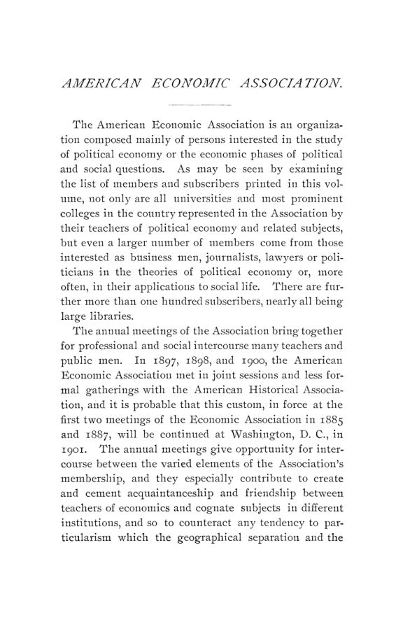

Detroit, 1900: a concorrência, as concessionárias e o negócio de Veblen
Leitura: 12 min
Detroit e Ann Arbor, dezembro de 1900: Ely defende a concorrência elevada pela lei, advogados discutem como tributar ferrovias e concessionárias, e Veblen separa ganhar dinheiro de produzir bens.


Na noite de 27 de dezembro de 1900, numa igreja metodista de Detroit, Richard T. Ely abriu seu discurso presidencial lendo citações que se anulavam. Na primeira, um reformador social chamava a concorrência de ausência de lei, incompatível com o cristianismo. Na segunda, outro autor a descrevia como o motor que deixara o trabalhador comum mais confortável que os reis cantados por Homero. Ely leu ainda Charles Kingsley contra e John Bascom a favor, e fez a pergunta que organizou a fala: como homens sinceros podiam pensar coisas tão opostas sobre a pedra angular da ordem econômica?
A resposta de Ely era que falavam de coisas diferentes. Concorrência, no sentido econômico, não é qualquer luta por riqueza: o assalto, a pirataria e a fraude ficam fora dela. É uma disputa com limites fixados pela Constituição, pela lei e pela ordem social, e esses limites sobem com o tempo. A escravidão, a pirataria e o trabalho de crianças muito pequenas já tinham caído abaixo do plano da concorrência. Uma das funções do governo, numa frase que Ely atribuiu a um ex-presidente da associação, Henry C. Adams, era elevar o nível ético da concorrência.
Concorrência regulada ou concorrência suprimida?
Ely propôs um teste para qualquer medida social: a boa fortalece o indivíduo e o grupo para a concorrência; a má os enfraquece. O exemplo foram os cortiços de Nova York, onde, segundo depoimento da Charity Organization Society a uma comissão estadual, a superlotação e a falta de luz e ar alimentavam doença e miséria. Daí uma distinção que ele julgava pouco notada: uma coisa é a extensão socialista do governo, que quer suprimir a concorrência; outra, a extensão conservadora, que quer preservá-la. A irrigação no Oeste seria do segundo tipo, porque a propriedade privada da água terminaria em monopólio.
“Não podemos, portanto, permitir jamais que a concorrência cesse.” (“We can, then, never allow competition to cease.”)
Combinações de capital e de trabalho poderiam crescer livremente enquanto significassem associação e cooperação. Quando significassem monopólio, a concorrência teria de ser restaurada; onde isso fosse impossível, seus fins seriam buscados por outros meios de controle social, inclusive a propriedade e a gestão públicas, com concorrência na admissão ao emprego público. Ely terminou apontando duas linhas de evolução que o século XX teria de conciliar: o movimento rumo à igualdade de oportunidades e as instituições que limitam a concorrência, como a propriedade privada, a herança e os direitos adquiridos.
Como tributar uma ferrovia que atravessa vários estados?
Na manhã do mesmo dia, no Hotel Cadillac, dois advogados trataram de um problema mais prosaico. Frederic C. Howe, de Cleveland, mostrou como a Suprema Corte dos Estados Unidos havia derrubado impostos estaduais sobre frete, passageiros, mensagens telegráficas e receita bruta do comércio interestadual, por equivalerem a regular um comércio que cabia ao Congresso. Os estados ficaram com sistemas remendados. O mais antigo, o imposto geral sobre a propriedade, mandava funcionários de condado avaliar trilhos, vagões e terrenos peça por peça, sem enxergar a empresa como negócio em funcionamento.
A saída de Howe era a regra da unidade, já aceita pela Suprema Corte: somar o valor de mercado das ações ao das obrigações, tratar a ferrovia como um todo, franquia incluída, e atribuir a cada estado a fração correspondente à extensão de linha em seu território. Frederick N. Judson, de St. Louis, aceitou o princípio e foi além. Em vez de cotações que oscilam, propôs capitalizar a 5% o lucro líquido atribuído ao estado, para que a empresa pagasse segundo a capacidade e uma regra fixa tomasse o lugar da discrição dos avaliadores.
O debate mostrou quanto o tema dependia do resto do sistema. E. R. A. Seligman lembrou que a subavaliação nascia de usar a mesma base para impostos locais e estaduais. Arthur J. Eddy sustentou que tributar uma concessionária cujas tarifas o Estado regula é contraditório, porque o imposto volta ao usuário; John H. Gray acrescentou que tais impostos reduzem o serviço e agravam os cortiços. Theodore Marburg pediu transição gradual: na Consolidated Gas de Nova York, que pagava 8% de dividendos com a ação perto de 200, a alíquota de US$ 2 sobre o valor cheio levaria metade do dividendo.
O que a anexação fez com as contas de Porto Rico?
Na sexta-feira, em Ann Arbor, a sessão conjunta com a American Historical Association tratou de colônias. J. H. Hollander, tesoureiro de Porto Rico, ficou retido na ilha, e Charles H. Hull, secretário da associação, improvisou um balanço fiscal. A passagem aos Estados Unidos eliminava a remessa a Madri, a contribuição às despesas militares da Espanha e o sustento do clero, pouco mais de 41% da despesa insular. Mas levava também a alfândega, a loteria e o correio.
Hull não atacou o plano do governador Charles H. Allen, que trocava os tributos espanhóis por imposto sobre a propriedade, imposto seletivo sobre bebidas e fumo e imposto sobre herança. Formulou duas dúvidas como perguntas. A fiscal: seria possível extrair cerca de 3% de um valor tributável estimado em cem milhões de uma população tão pobre? A política: mudanças tão amplas não atiçariam o descontentamento? Para esta, citou uma máxima que, a seu ver, talvez não fosse sábia do ponto de vista fiscal, mas era verdadeira na política:
“Não há bons impostos senão os impostos velhos.” (“There are no good taxes but old taxes.”)
A universidade deve formar homens de negócios?
A tarde foi do ensino comercial. Edmund J. James, da University of Chicago, contou que, quando começou a defender o tema, vinte anos antes, falava sozinho; agora ao menos uma dúzia de instituições organizava departamentos de comércio, da Wharton School, fundada em 1881, às escolas abertas em 1900 em Dartmouth, Vermont, Nova York, Michigan e Wisconsin. Sua tese: a universidade deveria tratar o futuro comerciante como trata o futuro advogado ou médico, com a economia política no papel que a matemática tem para o engenheiro.
C. W. Haskins, contador público da New York University, defendeu que contabilidade não é escrituração e que sustenta uma profissão no plano da medicina e do direito. No debate, Frank H. Dixon, de Dartmouth, pediu que se formasse primeiro o homem e depois o negociante, com o estudo comercial no último ano e na pós-graduação. William A. Scott, de Wisconsin, defendeu cursos técnicos desde o início, com dados da sua escola: 26 dos 84 primeiros alunos disseram que, sem ela, teriam ido direto para os negócios.
Ganhar dinheiro é o mesmo que produzir?
O trabalho mais ambicioso do volume não foi ouvido. Thorstein Veblen, da University of Chicago, não pôde ir a Detroit, e “Industrial and Pecuniary Employments” foi lido apenas pelo título; saiu impresso com os demais. Veblen parte da divisão clássica entre terra, trabalho e capital e de uma premissa que, segundo ele, os clássicos herdaram da crença numa ordem natural: a de que cada fator recebe o equivalente ao que contribui.
Contra isso, propõe separar dois tipos de ocupação. As industriais lidam com coisas e processos materiais, e visam à utilidade. As pecuniárias lidam com preços, compra e venda e propriedade, e visam ao ganho. O especulador em títulos é o caso extremo, mas o empresário moderno, cada vez mais distante da fábrica, também é sobretudo homem de negócios. Ele decide quais processos serão usados, pode promover uma fusão útil e pode retardá-la enquanto disputa posição. Na concorrência entre empresas, o critério de sobrevivência é
“a aptidão para o ganho pecuniário, não a aptidão para servir à coletividade” (“fitness for pecuniary gain, not fitness for serviceability at large”)
As consequências chegam à teoria da distribuição. Se a remuneração depende do que é vendável para quem paga, não há base para dizer que quem ganha mais serve mais. Capital também tem dois sentidos: o pecuniário, soma de valores de mercado que oscila com a psicologia das multidões, e o industrial, conjunto de meios físicos. Teorias do juro baseadas na produtividade seriam tão difíceis de sustentar quanto as que explicam assim os ganhos dos negócios. Numa comunidade industrial moderna, estima Veblen, a margem de desperdício admissível provavelmente passa de metade da produção.
Que teoria a década seguinte pediria?
No sábado, Frank A. Fetter, de Stanford, previu uma década de reconstrução. Desde 1885, disse, a teoria do valor baseada na utilidade tinha desacreditado o custo de produção; faltava refazer os conceitos que dependiam dele. Capital deveria ser definido sem referência ao trabalho, a renda da terra como pagamento por um dom da natureza deveria ser abandonada e a divisão convencional dos fatores era ilógica. Seligman respondeu que, do ponto de vista social, utilidade marginal e custo marginal se igualam. F. M. Taylor disse esperar o oposto de quase tudo; E. A. Ross apoiou Fetter.
O encontro terminou com a contabilidade das cidades. Um comitê presidido por M. N. Baker, do Engineering News, declarou a contabilidade municipal americana assistemática, incompleta e enganosa, e concluiu que questões como a propriedade municipal de serviços ou a execução de obras por administração direta ou por empreitada não poderiam ser estudadas sem contas uniformes. Allen Ripley Foote lembrou que propusera algo parecido, para empresas concessionárias, na reunião de 1890, sem que houvesse tempo de discutir.
E a própria associação, como ia?
Sessenta e um sócios assinaram o registro da reunião. O secretário e tesoureiro Charles H. Hull relatou ganho líquido de 57 entre sócios e assinantes, mas pediu números menos volumosos: a associação imprimia de 1.000 a 1.100 páginas por ano e deveria descer a 700 ou 800. F. W. Taussig deixou a associação e a presidência do comitê de publicações, que passou a Sidney Sherwood. Ely foi reeleito presidente.
Na minha leitura
Na minha leitura, o volume reúne duas maneiras de olhar o mercado que ainda não conversam. Ely mantém a pergunta normativa, se a concorrência é benéfica, e responde que sim desde que a lei a eleve; o teste que propõe, fortalecer ou enfraquecer os concorrentes, é útil, mas pressupõe que o resultado da disputa coincida com o bem comum. Veblen recusa exatamente esse pressuposto. Ao separar o que é lucrativo do que é produtivo, ele tira da teoria a garantia de que a remuneração mede a contribuição. É a raiz do que hoje se discute como distância entre retorno privado e retorno social, e continua sendo o ponto fraco de qualquer defesa automática da renda como medida de mérito.
A sessão tributária mostra o outro lado: onde a teoria não alcança, o direito decide. Howe e Judson discutem menos quem deve pagar do que o que a Suprema Corte deixaria cobrar, e a regra da unidade prevaleceu por ser constitucional e difícil de burlar. Os alertas de Eddy, de que o imposto sobre serviço com tarifa regulada acaba no usuário, e de Marburg, sobre a mudança abrupta de base, valem para qualquer reforma que atinja setores regulados: a incidência e o calendário pesam tanto quanto o princípio.
Glossário
- concessionária (quasi-public corporation)
- empresa privada que presta serviço de uso público, como ferrovia, gás, água ou bonde, em geral com franquia do Estado ou do município.
- franquia (franchise)
- direito concedido pelo poder público, como o de usar ruas para trilhos e canos; seu valor econômico vai além dos bens físicos.
- imposto geral sobre a propriedade
- tributo estadual e local que avaliava todos os bens de cada contribuinte, móveis e imóveis, por avaliadores locais.
- regra da unidade (unit rule)
- avaliar a empresa inteira como um todo e atribuir a cada estado a parte proporcional à extensão de linha, fios ou receita em seu território.
- capitalizar
- converter uma renda anual em valor de capital dividindo-a por uma taxa; US$ 5 por ano a 5% valem US$ 100.
- ocupações pecuniárias
- em Veblen, atividades voltadas a preços, compra e venda e propriedade, cujo objetivo é o ganho, e não a produção material.
- capital pecuniário e capital industrial
- em Veblen, o primeiro é uma soma de valores de mercado; o segundo, o conjunto de meios físicos de produção.
- administração direta e empreitada
- duas formas de executar obra pública: com pessoal contratado pela prefeitura por dia ou por contrato com empresa privada.
Artigos desta edição
- Competition: Its Nature, Its Permanency, and Its Beneficence — Richard T. Ely; discurso presidencial (pp. 55–70). Ely parte de citações opostas sobre a concorrência e argumenta que elas falam de coisas diferentes. A concorrência econômica é uma disputa limitada pela Constituição, pela lei e pela ordem social, e esses limites sobem com a evolução social: escravidão, pirataria e trabalho infantil já caíram abaixo dela. Propõe como teste de toda medida social fortalecer o indivíduo e o grupo para a concorrência. Distingue a extensão socialista do governo, que suprime a concorrência, da conservadora, que a preserva, como na irrigação. Onde houver monopólio, a concorrência deve ser restaurada ou seus fins obtidos por controle social, inclusive propriedade pública. JSTOR
- The Taxation of Quasi-Public Corporations — Frederic C. Howe (Cleveland, Ohio) (pp. 71–93). Howe classifica os métodos estaduais de tributar ferrovias e concessionárias: imposto geral sobre a propriedade por inventário, impostos sobre frete, passageiros ou receita bruta, licenças e, mais recentemente, impostos sobre franquias pela regra da unidade. Percorre as decisões da Suprema Corte que invalidaram impostos sobre o comércio interestadual. Em Ohio, a receita bruta de seis ferrovias dobrou entre 1885 e 1896, e a avaliação subiu pouco mais de 11%. Defende somar o valor de mercado de ações e obrigações e repartir o total entre estados por extensão de linha, como em Connecticut, Massachusetts e na proposta da Conferência Tributária da Pensilvânia, e reconhece o risco de dupla tributação. JSTOR
- The Taxation of Quasi-Public Corporations — Frederick N. Judson (St. Louis, Missouri) (pp. 94–106). Judson define o problema como tributação de franquias, o valor intangível que a concessão pública acrescenta aos bens físicos. Resume três princípios firmados pela Suprema Corte: a regra da unidade, a repartição por extensão de linha e a média de uso habitual para vagões que circulam por vários estados. Mostra a desigualdade das avaliações: no Missouri, ferrovias a cerca de 37% do valor de mercado e propriedades rurais a cerca de 33%. Propõe capitalizar a 5% o lucro líquido atribuído a cada estado, invocando a certeza de Adam Smith, isentar os detentores de títulos já tributados na empresa e adotar a reciprocidade entre estados. JSTOR
- The Taxation of Quasi-Public Corporations: Discussion — E. R. A. Seligman, Arthur J. Eddy, James B. Dill, W. Z. Ripley, E. J. James, John H. Gray, F. J. Goodnow, F. N. Judson, Theodore Marburg e S. F. Weston (pp. 107–125). Seligman distingue três tipos de franquia e liga a subavaliação ao uso da mesma base para impostos locais e estaduais. Eddy argumenta que tributar concessionária de tarifa regulada é ilógico, pois o imposto volta ao usuário; James discorda, Gray teme serviço pior. Dill pede cobrança anual pela franquia calculada por regra pública. Ripley lembra que a ação da Third Avenue Railway passou por 250, 50 e 100, o que torna instável avaliar pela cotação. Goodnow e Judson discutem o caso Maine contra Grand Trunk. Marburg pede transição gradual; Weston relata avaliações de 40% a 70% do valor em Cleveland. JSTOR
- Response by Richard T. Ely: Discussion — H. E. Bourne (Western Reserve University) e Charles H. Hull (Cornell University) (pp. 131–143). Debate da sessão conjunta sobre colônias, cujos trabalhos principais não foram impressos aqui. Bourne sustenta que cada colônia é um problema local e que a experiência europeia vale mais que as tradições políticas americanas. Hull, substituindo Hollander, examina as finanças de Porto Rico: a anexação cortou menos de 50% da despesa e cerca de 75% da receita, sobretudo a alfândega, que dava 66% do total. Estima em 3,25 milhões de pesos anuais a necessidade com escolas e estradas e pergunta se o plano do governador Allen, com imposto sobre a propriedade, seletivo e sobre herança, conseguirá arrecadar isso. JSTOR
- Relation of the College and University to Higher Commercial Education — Edmund J. James (University of Chicago) (pp. 144–165). James descreve a expansão recente do ensino comercial superior, da Wharton School, de 1881, às escolas criadas em Chicago, Califórnia, Nova York, Dartmouth, Vermont, Michigan e Wisconsin, e o movimento paralelo na Europa. Atribui a aceleração à busca das universidades por um campo novo e à demanda dos próprios homens de negócios. Responde às objeções de que o curso tradicional basta, de que a faculdade atrasa a entrada no ofício e de que não existe currículo definido. Propõe a economia como disciplina central, acompanhada de contabilidade, geografia comercial e direito comercial, e anexa notas sobre a Wharton e sobre a escola de Wisconsin. JSTOR
- The Study of Economic Geography — L. M. Keasbey (Bryn Mawr College); resumo (pp. 166–167). Só o resumo foi impresso, porque o texto completo já estava destinado ao Political Science Quarterly. Keasbey defende uma geografia econômica que descreva os recursos naturais e seu uso para satisfazer necessidades humanas. Divide a Terra em ambientes gerais e locais, associa cada ambiente local a uma atividade produtiva, como caça, pastoreio ou agricultura, e a um sistema econômico, e esboça a passagem da economia feudal à plutocrática e à capitalista. JSTOR
- The Place of the Science of Accounts in Collegiate Commercial Education — C. W. Haskins (New York University) (pp. 168–176). Haskins, contador público, defende que a contabilidade é uma ciência sobre a qual se ergue uma profissão comparável à medicina, à teologia e ao direito, e que não se confunde com escrituração. Compara a educação comercial europeia, forte no ensino e fraca na contabilidade profissional, com a britânica, que tinha a profissão sem o sistema de ensino. Explica o nome da School of Commerce, Accounts and Finance da New York University e lista o que o curso deve cobrir: teoria das contas, contas de empresas, municípios e governo federal, falências, auditoria e relatórios. JSTOR
- The Place of the Science of Accounts in Collegiate Commercial Education: Discussion — F. H. Dixon, William A. Scott, Davis R. Dewey, M. N. Baker, Isaac A. Loos e O. M. W. Sprague (pp. 176–189). Dixon aceita a necessidade do ensino comercial, mas critica cursos de quatro anos que substituem a formação geral: quer o estudo comercial no último ano e na pós-graduação, como nas profissões liberais. Scott responde que exigir curso prévio afastaria justamente o público visado e defende cursos técnicos; em Wisconsin, 40% a 50% dos calouros não teriam entrado em universidade alguma sem a escola. Dewey compara com as escolas de engenharia, que recebem alunos aos dezoito anos. Baker relata o debate entre engenheiros, Loos aponta o ensino secundário e Sprague propõe formar como formam os redatores da imprensa econômica. JSTOR
- Industrial and Pecuniary Employments — Thorstein Veblen (University of Chicago); lido apenas pelo título (pp. 190–235). Veblen examina a divisão clássica dos fatores em terra, trabalho e capital e identifica nela um postulado herdado da crença numa ordem natural: a equivalência entre o que cada agente contribui e o que recebe. Esse postulado não pode ser provado nem refutado, porque as grandezas envolvidas não são mensuráveis. Para mantê-lo, a teoria tratou a aquisição como parte da produção e explicou a renda de juízes, clérigos ou empresários por uma produtividade atribuída. Veblen propõe distinguir ocupações industriais, voltadas a coisas e processos materiais, de ocupações pecuniárias, voltadas a preços, compra e venda e propriedade. O empresário moderno pertence sobretudo às segundas: decide quais processos serão usados, pode promover combinações e também retardá-las enquanto disputa posição. Na concorrência, sobrevive o mais apto ao ganho, não ao serviço. Daí três consequências: remuneração e produtividade se dissociam, inclusive nos salários; capital tem um sentido pecuniário, soma de valores de mercado sujeita à psicologia coletiva, e um sentido industrial, conjunto de meios físicos; e teorias de juros fundadas na produtividade ficam tão frágeis quanto as dos ganhos de negócio. Na parte final, Veblen associa o pensamento em termos de causa material, próprio das ocupações mecânicas, à difusão do sentimento socialista entre operários qualificados das cidades industriais. JSTOR
- The Next Decade of Economic Theory — Frank A. Fetter (Leland Stanford Junior University) (pp. 236–246). Fetter chama o período iniciado em 1885 de época da discussão do valor-utilidade e lista seus resultados: o custo de produção desacreditado como explicação de valor, a utilidade e o princípio marginal no centro da teoria. Prevê que a década seguinte terá de refazer os conceitos dependentes da velha teoria. Capital deveria ser definido sem referência ao trabalho e alinhado ao uso comercial; a renda como pagamento por um dom da natureza, abandonada; a divisão convencional dos fatores, descartada; renda e juro, tratados como modos de cálculo do retorno de bens materiais, não como tipos distintos de agente. JSTOR
- The Next Decade of Economic Theory: Discussion — E. R. A. Seligman, C. A. Tuttle, F. M. Taylor e E. A. Ross (pp. 247–253). Seligman põe o livro de J. B. Clark na linhagem de Smith, Ricardo, Mill, Cairnes, Jevons e Marshall, mas julga que Fetter exagera o antagonismo entre velhas e novas teorias: do ponto de vista social, utilidade marginal e custo marginal se igualam. Tuttle concorda que a terminologia é insatisfatória, mas não aceita aposentar a teoria da renda. Taylor diz esperar quase o oposto das previsões de Fetter e defende a continuidade da ciência e o custo de produção. Ross apoia Fetter e pede que a economia deixe de lado distinções físicas e explique antes de justificar. JSTOR
- Uniform Municipal Accounts and Statistics — Comitê especial: M. N. Baker (presidente), H. B. Gardner, Charles J. Bullock, Edward W. Bemis, E. Dana Durand e F. R. Clow (pp. 254–283). O comitê atribui a pobreza da economia municipal à falta de dados comparáveis e lista dezenas de serviços urbanos que exigiriam estatísticas, de banhos públicos a abastecimento de água. Conclui que a contabilidade municipal americana é assistemática, incompleta e enganosa; que estatísticas estaduais e nacionais dependem de contas uniformes; que questões como propriedade municipal e obras por administração direta ou empreitada não podem ser bem estudadas sem elas; e que as sociedades técnicas, doze delas já com comitês sobre o tema, devem cooperar e levar os modelos a órgãos estaduais de controle. JSTOR
- Uniform Municipal Accounts and Statistics: Discussion — Allen Ripley Foote (pp. 284–292). Foote endossa o relatório e reconstitui sua própria iniciativa: na reunião de 1890, depois de um trabalho de Henry C. Adams sobre estatística como meio de corrigir abusos corporativos, propôs um comitê para definir as contas das concessionárias, sem que houvesse tempo de discutir. Cita escritos seus segundo os quais a escolha entre gestão pública e privada deve depender do custo comprovado do serviço, o que exige contas uniformes e obrigatórias, e lista projetos de lei que redigiu para a assembleia de Ohio em 1900. JSTOR
- Remarks of President Angell in Opening the Joint Session of the Two Associations in Ann Arbor — James B. Angell (presidente da University of Michigan) (pp. 127–128). Boas-vindas às duas associações, com elogio à aproximação entre história e economia e à atenção aos problemas coloniais. JSTOR
- Response by Richard T. Ely — Richard T. Ely, em nome das duas associações (pp. 129–130). Agradecimento à University of Michigan, na ausência de Edward Eggleston, presidente da American Historical Association. JSTOR
- The Thirteenth Annual Meeting — Relatório da reunião (pp. 43–54). Programa de 27 a 29 de dezembro de 1900, lista de 61 presentes, relatório do secretário e tesoureiro, contas e eleição da diretoria, com Ely reeleito. JSTOR
- American Economic Association — Manual da associação (pp. 7–42). Apresentação, estatuto, dirigentes, conselho, lista e distribuição geográfica dos sócios. JSTOR
Fontes
- American Economic Association (pp. 7–42). JSTOR · Internet Archive (PDF)
- The Thirteenth Annual Meeting (pp. 43–54). JSTOR · Internet Archive (PDF)
- Competition: Its Nature, Its Permanency, and Its Beneficence (pp. 55–70). JSTOR · Internet Archive (PDF)
- The Taxation of Quasi-Public Corporations (pp. 71–93). JSTOR · Internet Archive (PDF)
- The Taxation of Quasi-Public Corporations (pp. 94–106). JSTOR · Internet Archive (PDF)
- The Taxation of Quasi-Public Corporations: Discussion (pp. 107–125). JSTOR · Internet Archive (PDF)
- Remarks of President Angell in Opening the Joint Session of the Two Associations in Ann Arbor (pp. 127–128). JSTOR · Internet Archive (PDF)
- Response by Richard T. Ely (pp. 129–130). JSTOR · Internet Archive (PDF)
- Response by Richard T. Ely: Discussion (pp. 131–143). JSTOR · Internet Archive (PDF)
- Relation of the College and University to Higher Commercial Education (pp. 144–165). JSTOR · Internet Archive (PDF)
- The Study of Economic Geography (pp. 166–167). JSTOR · Internet Archive (PDF)
- The Place of the Science of Accounts in Collegiate Commercial Education (pp. 168–176). JSTOR · Internet Archive (PDF)
- The Place of the Science of Accounts in Collegiate Commercial Education: Discussion (pp. 176–189). JSTOR · Internet Archive (PDF)
- Industrial and Pecuniary Employments (pp. 190–235). JSTOR · Internet Archive (PDF)
- The Next Decade of Economic Theory (pp. 236–246). JSTOR · Internet Archive (PDF)
- The Next Decade of Economic Theory: Discussion (pp. 247–253). JSTOR · Internet Archive (PDF)
- Uniform Municipal Accounts and Statistics (pp. 254–283). JSTOR · Internet Archive (PDF)
- Uniform Municipal Accounts and Statistics: Discussion (pp. 284–292). JSTOR · Internet Archive (PDF)
- Sumário da edição no JSTOR: Publications of the American Economic Association, 3ª série, vol. 2, nº 1.
Documento em domínio público (EUA, publicado antes de 1931), via JSTOR Early Journal Content e Internet Archive. Resumo e comentário do autor deste site, sem afiliação com a American Economic Association. Encontrou um erro? Escreva: a correção é publicada no próprio texto, com data.
← Nº 56 · Davis, 1900: o papel que Massachusetts imprimiu para pagar a guerra Nº 58 · Davis, 1901: o banco da terra que o Parlamento fechou por lei →